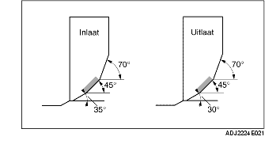

CONTROLE/REPARATIE KLEPZITTING
B3E011010280E01
1. Meet de breedte van het contactvlak tussen de klep en de klepzitting met behulp van rode loodcoating.
-
• Corrigeer indien nodig de klepzitting met een frees van 45° en/of corrigeer de klepschotel.

-
Standaardbreedte van het contactvlak
-
0,8-1,4 mm {0,032-0,055 in}
2. Controleer of de klepzitting midden op de rand van de klepschotel valt.
-
• Corrigeer de klepzitting met een frees van 70° (inlaat) of 70° (uitlaat) en een frees van 45° als het contactvlak te ver naar buiten zit.
-
• Corrigeer de klepzitting met een frees van 35° (inlaat) of 30° (uitlaat) en een frees van 45° als het contactvlak te ver naar binnen zit.
3. Controleer de diepteligging van de klepzittingen. Meet de lengte van het uitstekende gedeelte van een standaard klepsteel (afmeting L).
-
• Vervang de cilinderkop als de waarde niet aan de specificaties voldoet.
-
Diepteligging klepzitting
-
39,29 mm {1,5468 in}